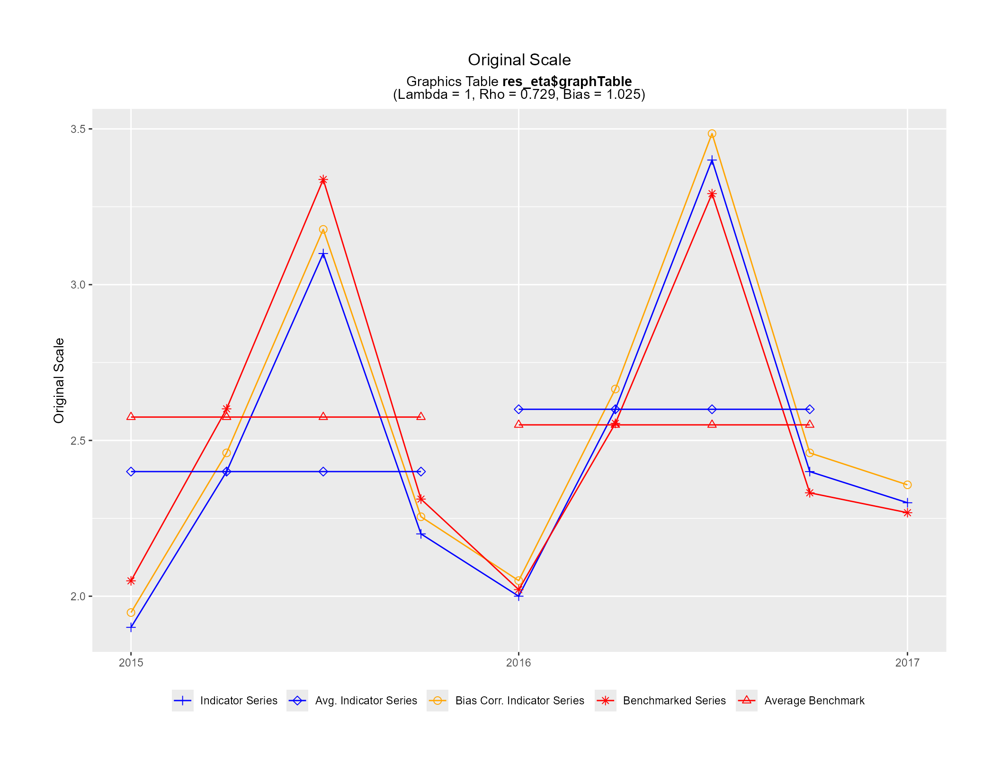
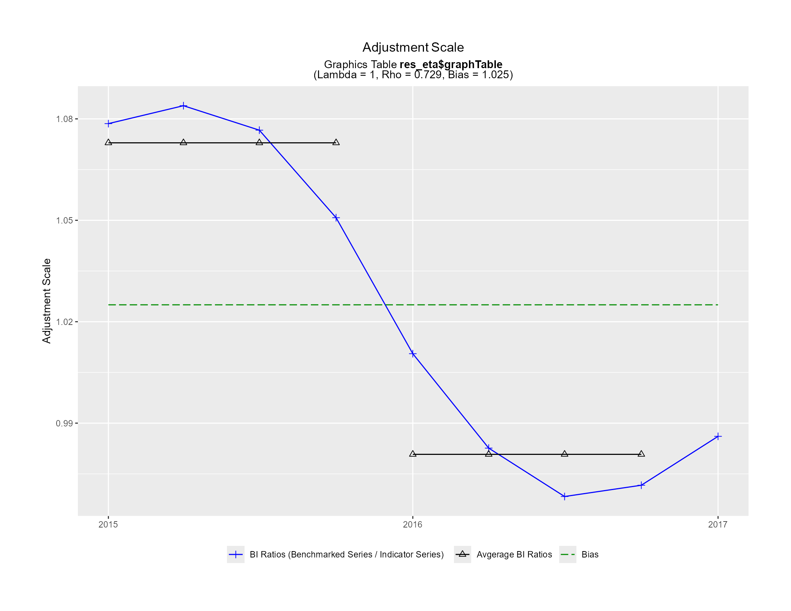
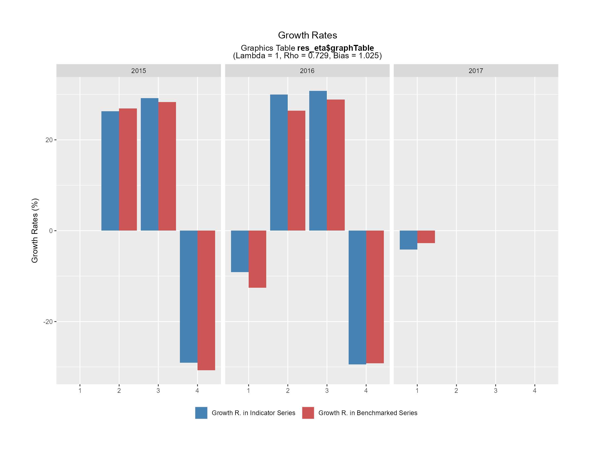
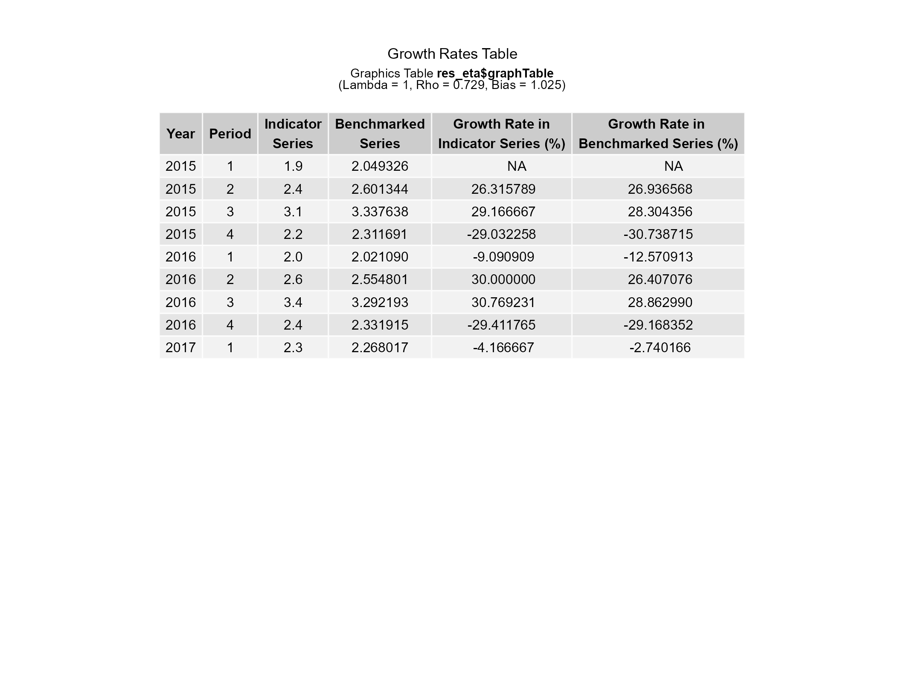
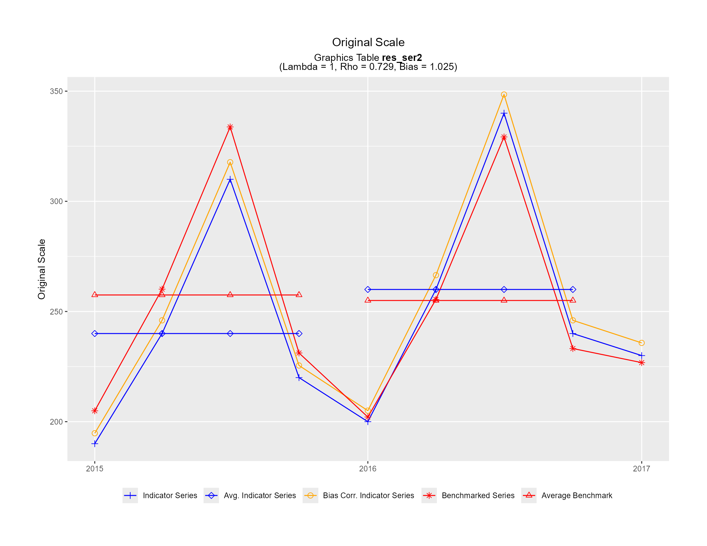
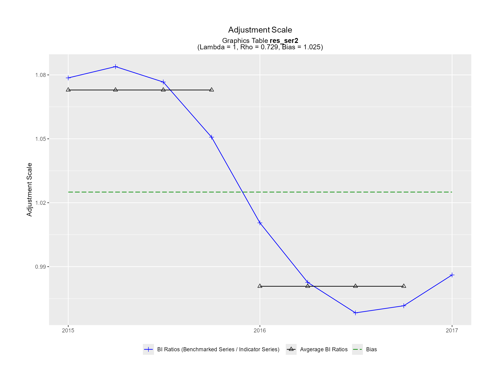

Fonctions utilisées à l'interne par plot_graphTable() pour générer les graphiques d'étalonnage dans un fichier PDF :
ori_plot(): Échelle originale (argumentori_plot_flag = TRUEdeplot_graphTable())adj_plot(): Échelle d'ajustement (argumentadj_plot_flag = TRUEdeplot_graphTable())GR_plot(): Taux de croissance (argumentGR_plot_flag = TRUEdeplot_graphTable())GR_table(): Tableau des taux de croissance (argumentGR_table_flag = TRUEdeplot_graphTable())
Lorsque ces fonctions sont appelées directement, le data frame graphTable (argument graphTable) ne devrait
contenir qu'une série unique et le graphique est généré dans le périphérique de graphiques courant (actif).
Utilisation
ori_plot(
graphTable,
title_str = "Original Scale",
subtitle_str = NULL,
mth_gap = NULL,
points_set = NULL,
pt_sz = 2,
display_ggplot = TRUE,
.setup = TRUE
)
adj_plot(
graphTable,
title_str = "Adjustment Scale",
subtitle_str = NULL,
mth_gap = NULL,
full_set = NULL,
pt_sz = 2,
display_ggplot = TRUE,
.setup = TRUE
)
GR_plot(
graphTable,
title_str = "Growth Rates",
subtitle_str = NULL,
factor = NULL,
type_chars = NULL,
periodicity = NULL,
display_ggplot = TRUE,
.setup = TRUE
)
GR_table(
graphTable,
title_str = "Growth Rates Table",
subtitle_str = NULL,
factor = NULL,
type_chars = NULL,
display_ggplot = TRUE,
.setup = TRUE
)Arguments
- graphTable
(obligatoire)
Data frame, ou objet compatible, correspondant au data frame de sortie graphTable de la fonction d'étalonnage.
- title_str, subtitle_str
(optionnel)
Chaînes de caractères spécifiant les titre et sous-titre du graphique.
subtitle_strest construit automatiquement à partir du contenu du data framegraphTablelorsqueNULLet contient le nom data framegraphTablesur la 2ème ligne et les paramètres d'étalonnage sur la 3ème ligne. La spécification de chaînes vides ("") supprimerait les titres. L'utilisation de syntaxe Markdown et HTML simple est permise (ex., pour l'affichage de caractères gras, italiques ou en couleur) grâce à l'utilisation à l'interne de la librairie ggtext (voirhelp(package = "ggtext")).Les valeurs par défaut sont
subtitle_str = NULLet un titre propre à chaque fonction pourtitle_str(voir Utilisation).- mth_gap
(optionnel)
Nombre de mois entre deux périodes consécutives (ex., 1 pour des données mensuelles, 3 pour des données trimestrielles, etc.). Basé sur le contenu du data frame
graphTablelorsqueNULL(calculé comme12 / graphTable$periodicity[1]).La valeur par défaut est
mth_gap = NULL.- points_set, full_set
(optionnel)
Vecteur de chaînes de caractères des éléments (variables du data frame
graphTable) à inclure dans le graphique. Automatiquement construit lorsqueNULL. Voirplot_graphTable()pour la liste des variables utilisées (par défaut) par chaque type de graphique.Les valeurs par défaut sont
points_set = NULLetfull_set = NULL.- pt_sz
(optionnel)
Taille du pictogramme (symbole) des points de données pour ggplot2.
La valeur par défaut est
pt_sz = 2.- display_ggplot
(optionnel)
Argument logique (logical) indiquant si l'object ggplot doit être affiché dans le périphérique de graphiques courant (actif).
La valeur par défaut est
display_ggplot = TRUE.- .setup
(optionnel)
Argument logique indiquant si les étapes de configuration doivent être exécutées ou non. Doit être
TRUElorsque la fonction est appelée directement (c.-à-d., hors du contexte deplot_graphTable()).La valeur par défaut est
.setup = TRUE.- factor, type_chars
(optionnel)
Facteur de taux de croissance (1 ou 100) et suffixe de l'étiquette des valeurs (« » ou « (%) ») selon le paramètre du modèle d'ajustement \(\lambda\). Basé sur le contenu du data frame
graphTablelorsqueNULL(basé surgraphTable$lambda[1]).Les valeurs par défaut sont
factor = NULLettype_chars = NULL.- periodicity
(optionnel)
Le nombre de périodes dans une année. Basé sur le contenu du data frame
graphTablelorsqueNULL(défini commegraphTable$periodicity[1]).La valeur par défaut est
periodicity = NULL.
Valeur de retour
En plus d'afficher le(s) graphique(s) correspondant(s) dans le périphérique de graphiques actif (sauf si
display_ggplot = FALSE), chaque fonction renvoie également de manière invisible une liste contenant les objets ggplot
générés. Notes :
ori_plot()etadj_plot()génèrent un seul objet ggplot (un seul graphique) alors queGR_plot()etGR_table()génèrent souvent plusieurs objets ggplot (plusieurs graphiques).Les objets ggplot renvoyés peuvent être affichés manuellement avec
print(), auquel cas il est suggéré d'apporter les mises à jour suivantes au thème ggplot2 (modifications utilisés à l'interne lorsquedisplay_ggplot = TRUE) :ggplot2::theme_update( plot.title = ggtext::element_markdown(hjust = 0.5), plot.subtitle = ggtext::element_markdown(hjust = 0.5), legend.position = "bottom", plot.margin = ggplot2::margin(t = 1.5, r = 1.5, b = 1.5, l = 1.5, unit = "cm"))
Détails
Voir plot_graphTable() pour une description détaillée des quatre graphiques d'étalonnage associés à ces fonctions
individuelles. Ces graphiques sont optimisés pour un format de papier Lettre US en orientation paysage, c.-à-d., 11po
de large (27.9cm, 1056px avec 96 PPP) et 8.5po de haut (21.6cm, 816px avec 96 PPP). Gardez cela à l'esprit lorsque
vous visualisez ou enregistrez des graphiques générés par des appels à ces fonctions individuelles (c.-à-d., hors du
contexte de plot_graphTable()). Notez également que GR_plot() et GR_table() génèrent souvent plus d'un graphique
(plus d'une page), à moins de réduire le nombre de périodes fournies en entrée dans le data frame graphTable
(ex., en subdivisant le data frame par plages d'années civiles).
Exemples
# Désactiver la création du périphérique de graphiques pour la page de référence HTML
# du site web (non petinent dans ce contexte)
creer_grDev <- !(identical(Sys.getenv("IN_PKGDOWN"), "true"))
# Série chronologique trimestrielle initiale (série indicatrice à étalonner)
sc_tri <- ts(c(1.9, 2.4, 3.1, 2.2, 2.0, 2.6, 3.4, 2.4, 2.3),
start = c(2015, 1), frequency = 4)
# Série chronologique annuelle (étalons)
sc_ann <- ts(c(10.3, 10.2), start = 2015, frequency = 1)
# Étalonnage proportionnel
res_eta <- benchmarking(ts_to_tsDF(sc_tri),
ts_to_bmkDF(sc_ann, ind_frequency = 4),
rho = 0.729, lambda = 1, biasOption = 3,
quiet = TRUE)
# Ouvrir un nouveau périphérique de graphiques de 11po de large et 8.5po de haut
# (format de papier Lettre US en orientation paysage)
if (creer_grDev) {
dev.new(width = 11, height = 8.5, unit = "in", noRStudioGD = TRUE)
}
# Générer les graphiques d'étalonnage
ori_plot(res_eta$graphTable)

adj_plot(res_eta$graphTable)

GR_plot(res_eta$graphTable)

GR_table(res_eta$graphTable)

# Simuler l'étalonnage de plusieurs séries (3 séries de stocks)
sc_tri2 <- ts.union(ser1 = sc_tri, ser2 = sc_tri * 100, ser3 = sc_tri * 10)
sc_ann2 <- ts.union(ser1 = sc_ann, ser2 = sc_ann * 100, ser3 = sc_ann * 10)
# Avec l'argument `allCols = TRUE` (séries identifiées avec la colonne `varSeries`)
res_eta2 <- benchmarking(ts_to_tsDF(sc_tri2),
ts_to_bmkDF(sc_ann2, ind_frequency = 4),
rho = 0.729, lambda = 1, biasOption = 3,
allCols = TRUE,
quiet = TRUE)
#>
#> Benchmarking indicator series [ser1] with benchmarks [ser1]
#> -----------------------------------------------------------
#>
#> Benchmarking indicator series [ser2] with benchmarks [ser2]
#> -----------------------------------------------------------
#>
#> Benchmarking indicator series [ser3] with benchmarks [ser3]
#> -----------------------------------------------------------
# Graphiques « Échelle originale » et « Échelle d'ajustement » pour la 2ième série (ser2)
res_ser2 <- res_eta2$graphTable[res_eta2$graphTable$varSeries == "ser2", ]
ori_plot(res_ser2)

adj_plot(res_ser2)

# Avec l'argument `by = "series"` (séries identifiées avec la colonne `series`)
res_eta3 <- benchmarking(stack_tsDF(ts_to_tsDF(sc_tri2)),
stack_bmkDF(ts_to_bmkDF(sc_ann2, ind_frequency = 4)),
rho = 0.729, lambda = 1, biasOption = 3,
by = "series",
quiet = TRUE)
#>
#> Benchmarking by-group 1 (series=ser1)
#> =====================================
#>
#> Benchmarking by-group 2 (series=ser2)
#> =====================================
#>
#> Benchmarking by-group 3 (series=ser3)
#> =====================================
# Graphique des taux de croissance pour le 3ième séries (ser3)
res_ser3 <- res_eta3$graphTable[res_eta3$graphTable$series == "ser3", ]
GR_plot(res_ser3)
# Fermer le périphérique de graphiques
if (creer_grDev) {
dev.off()
}